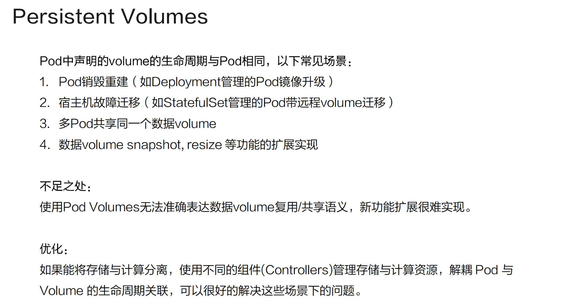
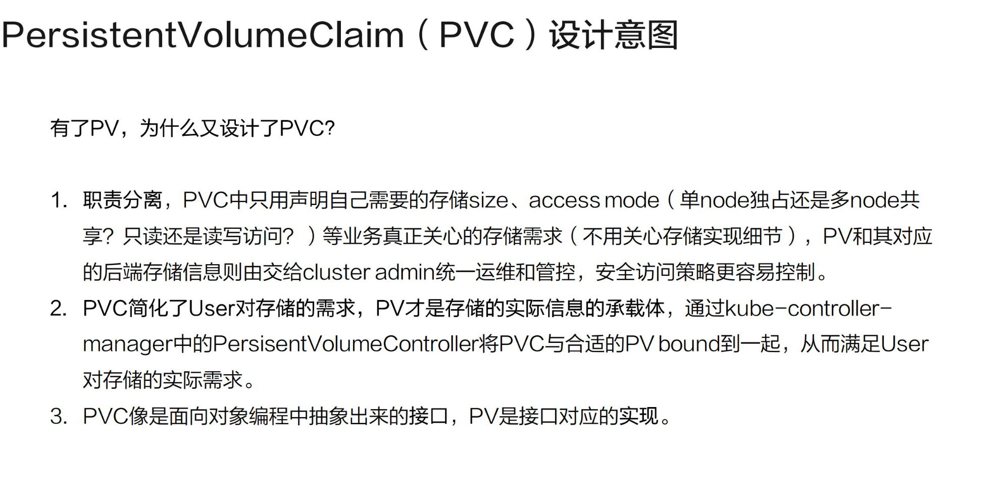
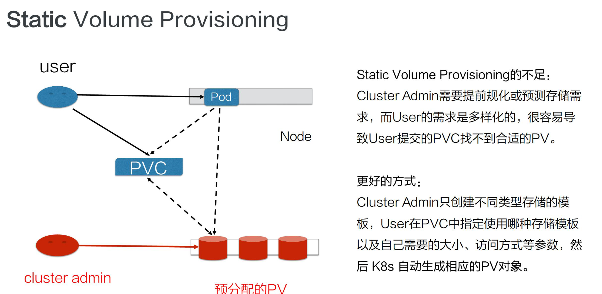
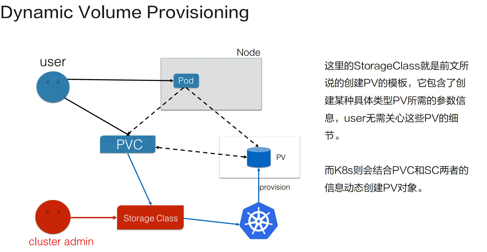

应用编排与管理：核心原理
本文是CNCF × Alibaba 云原生技术公开课的第九章应用存储和持久化数据卷：核心知识学习笔记。
关键词：k8s
本文主要介绍以下部分：
- K8s Volume使用场景
- PVC/PV/StrongeClass基本操作和概念解析
- PVC+PV体系的设计和实现原理
Volumes介绍
Pod Volumes
首先来看Pod Volumes的使用场景：
- 当Pod中的某一个容器在运行时异常退出，被kubelet重新拉起以后，如果保证之前容器产生的重要数据没有丢失？
- 如果 同一个Pod的多个Pod容器想要共享数据，应该如何去做？
以上两个场景，可以使用Volumes来很好解决，接下来来看一下Pod Volumes的常见类型：
- 本地存储：常见的有emptydir和hostpath；
- 网络存储：网络存储的实现方式有两种，一种是in-tree，就是实现的代码是在k8s代码仓库中的，随着k8s对存储类型的增多，这种方式会给k8s本身的维护和发展带来很大的负担；另一种是out-in-tree，首先方式是给k8s解耦的，通过抽象接口将不同存储的driver实现从k8s代码仓库中剥离，因此out-of-tree是CNCF社区中主推的实现网络存储插件的方式；
- Project Volumes：将一些配置信息，如secret/configmap用卷的形式挂载到容器中，让容器中的程序可以通过POSIX接口（系统调用）来访问配置数据；
- PV和PVC
Persistent Volumes

以下的几种场景，Pod Volumes是不能解决的：
- Pod销毁重建，如用Deployment管理的Pod，在做镜像升级的时候，会产生新的Pod并删除旧的Pod，那新Pod和旧Pod如何复用数据？
- 宿主机宕机，要迁移Pod，此时StatefulSet管理的Pod，其实是已经实现了带卷迁移的语义。此时Pod Volumes显然是无法做到；
- 多个Pod之间想要共享数据，如何声明？同一个Pod中多个容器想要共享数据，可以借助Pod Volumes来解决；当多个Pod共享数据时，就很难表达这种语义。
- 如果相对数据卷做一些功能扩展性，如snapshot、resize这些功能，又应该怎么实现？
以上场景中，Pod Volume很难表达复用的语义，对其扩展也比较困难，因此K8s又引入了Persistent Volume概念。通过Persistent Volume，可以将计算和存储分离，通过不同的组件来管理存储资源和计算资源，然后解耦Pod和Volume之间声明周期的关联，这样把Pod删除以后，使用的PV依然存在，还可以被新建的Pod复用。
Persistent Volumes Claim

用户在使用PV时实际上是通过PVC，PVC简化了k8s用户对存储的使用方式，做到了职责分离。通常用户在使用存储时，只需要声明存储大小和访问方式即可。
访问模式指的是使用的存储可以被多个ndoe共享还是只能单node独占访问？只读访问还是读写访问？用户只关心这些东西，与存储相关的实现细节是不关心的。
通过PV和PVC的概念，将用户需求与实现细节解耦，用户只需要通过PVC声明自己的存储需求。PV是由集群管理员和存储相关团队来统一运维和管控，这样的话，就简化了用户使用存储的方式，可以看到，PV和PVC的设计其实有点像面向对象的接口与实现的关系。用户在使用其功能时，只关心用户接口，不需关心内部复杂的实现细节。
由于PV是由集群管理员统一管控的，接下来就看这个PV对象是如何产生的。
Static Volume Provisioning
静态PV

静态PV：集群管理员事先去规划这个集群中的用户会怎样使用存储，它会先预分配一些存储，也就是预先创建一些 PV；然后用户在提交自己的存储需求（也就是 PVC）的时候，K8s 内部相关组件会帮助它把 PVC 和 PV 做绑定；之后用户再通过 pod 去使用存储的时候，就可以通过 PVC 找到相应的 PV，它就可以使用了。
不足：静态产生方式有什么不足呢？可以看到，首先需要集群管理员预分配，预分配其实是很难预测用户真实需求的。举一个最简单的例子：如果用户需要的是 20G，然而集群管理员在分配的时候可能有 80G 、100G 的，但没有 20G 的，这样就很难满足用户的真实需求，也会造成资源浪费。有没有更好的方式呢？
Dynamic Volume Provisioning
动态PV

- 动态PV：集群管理员不预先分配PV，他写了一个配置文件，这个模版文件是用来表示创建某一类型存储（块存储和文件存储等）所需要的一些参数，这些参数是用户不关心的，给存储本身实现有关的参数，用户只需要提交自身的存储需求，也就是PVC文件，并在PVC中指定的存储模版（StorageClass）。
- apiServer结合PVC和StorageClass的信息，动态生成用户所需要的存储（PV），将PVC和PV进行绑定后，Pod可以使用PV了。通过StorageClass配置生成存储需要的存储模版，结合用户的需求创建PV对象，做到按需分配，在没有增加用户使用难度的同时也解放了集群管理员的运维工作。
用例解读
来看一下Pod Volumes、PV、PVC、StrongeClass具体如何使用的？
Pod Volumes
1 | apiVersion: v1 |
.spec.volumes：声明Pod的volume信息.spec.volumes.volumeMounts：声明container如何使用Pod的Volumes- 当多个container共享同一个volume时，可以通过
spec.containers.volumeMounts.subPath隔离不同容器在同一个volume上数据存储的路径。
emptyDir、hostPath 都是本地存储，它们之间有什么细微的差别呢？
- emptyDir 其实是在 pod 创建的过程中会临时创建的一个目录，这个目录随着 pod 删除也会被删除，里面的数据会被清空掉；hostPath 顾名思义，其实就是宿主机上的一个路径，在 pod 删除之后，这个目录还是存在的，它的数据也不会被丢失。这就是它们两者之间一个细微的差别。
静态PV使用
静态PV首先是有管理员创建的，这里使用hostPath类型作为演示。
⚠️在生产集群中，你不会使用 hostPath。集群管理员会提供网络存储资源，比如 Google Compute Engine 持久盘卷、NFS 共享卷或 Amazon Elastic Block Store 卷。
1 | apiVersion: v1 |
persistentVolumeReclaimPolicy的意思就是这块存在被使用后，如果使用方Pod以及PVC都被删除，这个PV的回收策略。
首先，用户需要创建一个PVC对象，PVC对象只需要指定存储需求，而不用关心存储本身的具体实现细节。
存储需求包括：
- 需要的volume大小
- 访问方式：即这个存储的访问方式：这里声明为ReadWriteOnce，即只能在给node上读写
- 一般情况下文件存储的读写方式是ReadWriteMany，也就是多node读写访问；这里由于使用的是hostPath，因此只能设置ReadWriteOnce。
1 | apiVersion: v1 |
上文中可以看到，PVC的size和access mode和刚刚创建的PV其实是匹配的；当用户在提交PVC的时候，K8s集群的相关组件就会把PV和PVC bound一起。之后用户在提交Pod yaml时，在volumes上写PVC声明，通过claimName声明要用那个PVC。然后挂载方式就喝前面讲的一样了，当提交完yaml，api server可以通过PVC找到对应的PV， 然后就可以使用存储了。
1 | spec: |
动态PV使用
动态PV模式下系统管理员不在预分配PV，只是创建一个模版文件。
1 | apiVersion: storage.k8s.io/v1 |
模版文件叫做StorageClass
上述模版问卷需要填写一个是provisioner，这个就是创建PV对应的存储插件，使用StorageClass时需要提前安装存储插件
- 上述模版文件对应的驱动是 NFS文件系统
parameters：是通过K8s创建存储时需要指定的一些细节参数，而这些参数是用户不需要关心的：像server、path、readOnly分别就是NFS文件服务器的地址、文件分享路径、是否只读等的一些参数reclaimPolicy：是PV在Pod以及PVC被删除后的回收策略
当向系统提交完StorageClass，也就是提交创建PV的模版之后，还是需要写一个PVC的资源清单：
1 | apiVersion: v1 |
storageClassName：指定后端storageClassName，如不指定则使用默认的storageClassName；默认的sc通过注解storageclass.kubernetes.io/is-default-class: true标示。